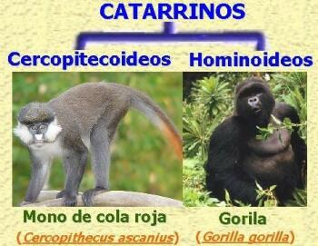
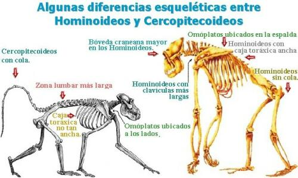
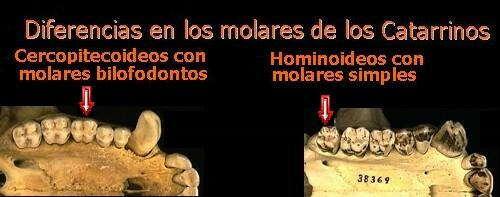
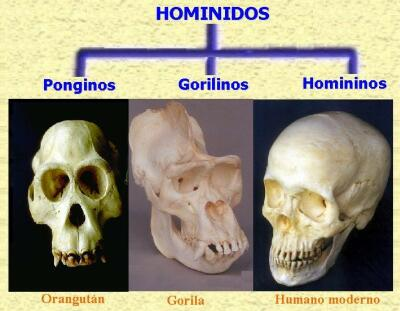
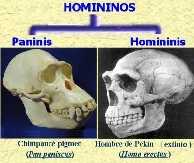

6. ¿Qué ramificaciones presenta el grupo de los catarrinos, y a cual de ellas pertenecemos los seres humanos?
Los catarrinos o “antropoides del Viejo Mundo”, como también se les llama, se dividen en dos grupos: Hominoideos y Cercopitecoideos. El grupo de los cercopitecoideos está integrado por los macacos, langures, papiones y mandriles. El grupo de los hominoideos está formado por los grandes simios: chimpancés, orangutanes, gorilas, gibones, los seres humanos (y los antecesores inmediatos del hombre).
En la siguiente ilustración Ud. puede ver como representante de los cercopitecoideos al mono de cola roja (Cercopithecus ascanius) y al gorila (Gorilla gorilla) como representante de los hominoideos.
Las principales diferencias entre los dos grupos de primates catarrinos son:
El tronco de los cercopitecoideos es largo, mientras que en los hominoideos es corto.
Los hominoideos no tienen cola. Los cercopitecoideos sí.
Los hominoideos presentan la caja torácica comprimida de adelante a atrás, mientras que los cercopitecoideos (y el resto de primates) tienen la caja torácica comprimida lateralmente.
Los hominoideos presentan los omóplatos en la espalda, mientras que los cercopitecoideos los tienen a los lados.
Los hominoideos tienen cerebros más grandes que los cercopitecoideos.
Los hominoideos presentan clavículas más largas que los cercopitecoideos.
Los cercopitecoideos presentan la zona lumbar más larga que la de los hominoideos.
-
Los hominoideos presentan el esternón más ancho que los hominoideos.
 -
Las cúspides de los molares de los cercopitecoideos están alineadas formando dos lomos o lofos (técnicamente se denominan “bilofodontos”), mientras que los molares de los hominoideos presentan cúspides bajas. Para darse una idea observe la siguiente ilustración.

Al revisar las anteriores características anatómicas queda claro que somos parte de la gran familia de los hominoideos. Sin lugar a dudas estamos emparentados con los grandes simios. Precisamente fue el estudio de la anatomía comparada lo que llevó a Charles Darwin a sugerir que un antropomorfo (u Hominoideo) antiguo diera origen al hombre:
“Admitiendo que los monos antropomorfos formen un subgrupo natural y siendo el hombre tan parecido a estos animales, no sólo en todos aquellos caracteres que le son comunes con todo el grupo catarrino, sino también en otros caracteres peculiares, como ausencia de cola y de callosidades, y en su aspecto general, podemos inferir que un miembro antiguo del subgrupo antropomorfo diera origen al Hombre”
—El Origen del Hombre. Pág. 208. Énfasis añadido.
7. ¿Qué ramificaciones presenta el grupo de los Hominoideos, y a cual de ellas pertenecemos los seres humanos?
La superfamilia de los Hominoideos se divide en dos familias: La familia de los gibones (Hylobatidae), y la familia a la que pertenecemos los seres humanos y los grandes simios (Hominidae).
Los miembros de la superfamilia Hominoidea o familiarmente llamados “Hominoideos o Antropomorfos” presentan una serie de características anatómicas que les permite la braquiación (La braquiación es la locomoción por balanceo entre los árboles) como las clavículas largas, omóplatos en la espalda, esternón y caja toráxica ancha. Sin embargo, son los gibones quienes han evolucionado una poderosa capacidad propulsora en sus extremidades superiores (o verdadera braquiación).

8. ¿Qué primates son los más cercanos parientes del ser humano?
Gracias a los estudios bioquímicos, se ha podido establecer que los orangutanes, gorilas y chimpancés son los parientes vivos más cercanos del hombre. Estos grandes simios junto con el hombre (y sus inmediatos ancestros conocidos por los fósiles) se agrupan en la familia Hominidae o familia de los homínidos. Hasta hace poco, la mayoría de la clasificaciones solo incluían a los humanos en la familia Hominidae; los otros simios, orangutanes, gorilas y chimpancés eran colocados en la familia Pongidae. La evidencia que unía a los humanos con los gorilas y los chimpancés creció dramáticamente en las pasadas dos décadas, gracias a los estudios moleculares. Ahora parece que los chimpancés, gorilas y humanos forman un grupo natural o “clado” (los científicos llaman “clado” a una línea evolutiva que incluye al antecesor y todos sus descendientes y sólo a ellos). Los estudios moleculares mostraron que dado que los chimpancés, gorilas y humanos estaban estrechamente emparentados, era un error ubicar a los grandes simios en una familia aparte de la de los seres humanos. Los orangutanes están solo ligeramente emparentados, y los gibones son una rama más distante (por eso se ubican en una familia aparte: Hylobatidae.
Las especies de Homínidos actuales son cinco. Los miembros no humanos están restringidos al África ecuatorial, Sumatra y Borneo. Los Homínidos fósiles datan desde el Mioceno (época que abarca entre hace 23 m.a. y 5 m.a.) y se conocen de África y Asia.
Los Homínidos en peso tienen un rango desde los 48 Kg a los 270 Kg. Los machos son más grandes que las hembras. Los Homínidos son los más grandes primates, con cuerpos robustos y brazos bien desarrollados. Sus dedos gordos del píe y pulgares son oponibles, excepto en los humanos, que hemos perdido la capacidad de oponer el dedo gordo del pie. Las diferencias esqueléticas entre los homínidos y los otros primates están relacionadas con la postura bípeda o semi- bípeda.
Todos los miembros de esta familia tienen grandes bóvedas craneales. La mayoría tiene caras prominentes y mandíbulas prognatas (proyectadas hacía adelante), una vez más los humanos somos la excepción. Los Homínidos tienen incisivos anchos y sus caninos nunca se desarrollan en colmillos. Los molares superiores son cuadrados y las cúspides forman picos (este tipo de diente se llama bunodonto); los inferiores son también bunodontos y poseen una cúspide adicional.
Los homínidos tienen un complejo comportamiento social. Las expresiones faciales y las complejas vocalizaciones juegan un importante rol en su comportamiento. Generalmente los homínidos dan luz a una sola cría, tras una larga gestación si se compara con los otros primates y mamíferos. El periodo de gestación en el orangután es de 260-270 días, en el gorila es de 250-270 días, en las dos especies de chimpancés es de 230-240 días, y en los humanos es de 266 días. El cuidado parental también es extenso en los homínidos, y sus crías dedican parte de su tiempo al juego.
Algunos autores dividen la familia de los homínidos en tres subfamilias: Ponginos (orangutanes), Gorilinos (Gorilas), y Homininos (chimpancés y humanos). En la siguiente ilustración podrá ver el cráneo de un integrante de cada subfamilia.
A su vez el grupo de los Homínidos se divide en dos grupos: Paninis y Homininis. El grupo de los Paninis incluye las dos especies de chimpancés, el segundo grupo abarca a los humanos modernos y extintos (género Homo) y a otros los homininos bípedos ya extintos (géneros Australopithecus y Paranthropus).
Las relaciones de parentesco (o relaciones “filogenéticas”) de todos los miembros de la superfamilia Hominoidea se muestran en la siguiente ilustración:

En el anterior gráfico se muestra el tiempo aproximado en que divergieron los diferentes grupos de Hominoideos. Note que la separación de los linajes que llevaron a los seres humanos por un lado, y a las dos especies de chimpancés por otro, se dio aproximadamente hace cinco millones de años. El anterior gráfico se ha construido con la información obtenida por la comparación del material genético de los primates involucrados, por lo que es un hecho comprobado que los chimpancés son los seres vivos más emparentados con nosotros.
Las dos especies de chimpancés son: El chimpancé común (Pan troglodytes), que habita al norte del río Zaire & el chimpancé pigmeo o bonobo (Pan paniscus) que habita al sur del mismo río. A pesar del nombre de “chimpancé pigmeo”, ésta especie no es más pequeña que su pariente del norte del río Zaire. Los chimpancés son primates muy inteligentes, tanto así que fabrican herramientas. En la siguiente ilustración puede observarse a un chimpancé común usando dos rocas para romper nueces.

9. Muchas personas al escuchar hablar de la evolución del hombre, imaginan que los chimpancés son los ancestros de los seres humanos. ¿Es eso cierto?
No. Los humanos no descendemos de los chimpancés actuales. Los humanos y chimpancés compartimos un ancestro común. En realidad el hombre tiene ancestros comunes con todos los seres vivos. Sin embargo, el ancestro común del hombre y el chimpancé vivió hace menos tiempo que el ancestro común del hombre con cualquier otra especie actual. Mire nuevamente la gráfica “relaciones filogenéticas de los hominoideos” y verá que el último ancestro común entre humanos y chimpancés está ubicado en cinco millones de años aproximadamente.
Los primates fósiles mejor conocidos aparecen en rocas que datan del Paleoceno (entre hace 65-57 millones de años antes del presente). En el Oligoceno (entre hace 34-23 m.a.) existían primates que si los viese una persona del común los llamaría “monos”. Estas especies se encuentran extintas, y sólo las conocemos por sus restos fósiles. De estos “monos” descendemos nosotros. Recuerde que los chimpancés son nuestro “primos”. Sin embargo, al mirar los fósiles de los primeros homínidos bípedos vemos que en la anatomía de su cráneo, manos y tórax se parecen más a los chimpancés que a nosotros. Esto nos lleva a afirmar que el antepasado común del hombre y el chimpancé se parecía más a este último.
<< página anterior | siguiente página >>
Los humanos en el grupo de los primates - Índice
Volver a la sección Ciencias de los orígenes
Comentarios
Comments powered by Disqus